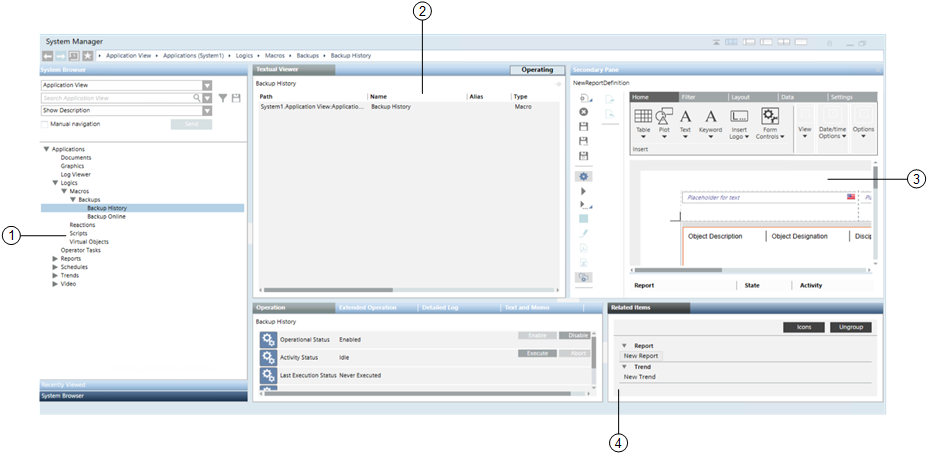

System Manager Workspace
System Manager is a multi-pane window for navigating, monitoring, and controlling all the components and subsystems of your site. For example, you can inspect properties and states of objects, send commands, browse the architecture of the installation, consult floor plan graphics, and so on. A typical layout has a Selection pane on the left where you can locate and select system objects from a hierarchical tree view, and multiple working panes on the right that display object properties, commands, and associated applications based on the current selection.

1 | Selection pane. Typically contains System Browser, for locating and selecting system objects in a hierarchical tree view. A drop-down menu lets you switch between different tree views (for example, Management View, Application View, or other customizable views). Your selection here is propagated to the Primary pane on the right, and to the Contextual pane below it. At the bottom of this pane, the Recently Viewed stacked tab lets you access the recent views navigation option. This lets you return to a previously visited view in the Primary pane. |
2 | Primary pane. Contains one or multiple tabs associated with the object you selected in the Selection pane. These tabs can include:
If the selected object has more than one associated application, tabs corresponding to those applications also display (for example, the Graphics Viewer displays in the Default tab while the other tool displays in its dedicated tab). If you have appropriate user rights, a button is available at the top of the pane to switch System Manager from Operating to Engineering mode to perform configuration tasks. |
3 | Secondary pane. Opens by default when you click a related item, so that you can view it without losing the current information on the Primary and Contextual panes. |
4 | Contextual pane. Provides additional information, actions, and resources for the object you most recently selected (in the Selection pane, or in one of the other panes). It is divided into two parts:
Detailed Log tab (right side): Lets you view a detailed history log about the selected object, and handle the log data. |
System Manager Navigation Workflows
You can interact with System Manager to perform actions and change what currently displays in the other panes in a variety of ways. These include:
- Navigate the system without having to make selections in System Browser. See Navigation Bar.
- Click an object (or group of objects) in the Selection pane to propagate its information, properties, and commands to the Primary and Contextual panes. See Primary Selection Workflow.
- Right-click an object (or group of objects) and choose whether to propagate (send) its information to the Primary or Secondary pane.
- Click the secondary header of a pane or an object in the Secondary pane to propagate its information, properties, and commands to the Contextual pane.
- Click an object in the Related Items tab to open it in the Primary (see Pane and Window Controls) or Secondary panes.
- Drag-and-drop objects from the Selection or Contextual pane to perform certain tasks. See Object Association Workflow.

System Browser supports drag-and-drop of single or multiple objects from any of the views—including the Search Result view. You can cancel a dragging operation by pressing the ESC key or by dragging the objects back to the original view (or other no-drop zone) and dropping them.